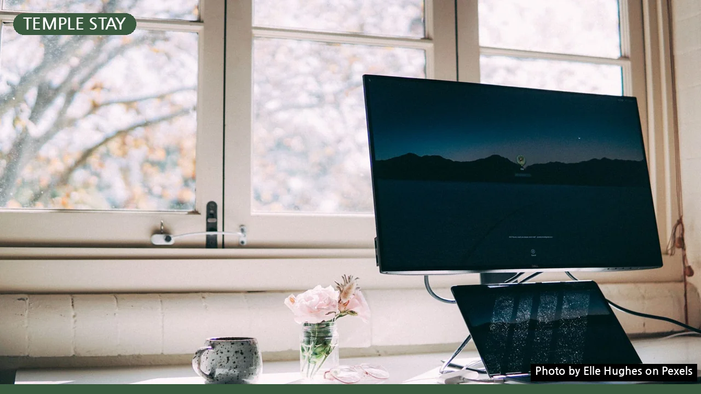

산사 워케이션, 와이파이 속도부터 업무 집중 노하우까지
사진: Elle Hughes / Pexels (무료 이미지, 출처 표기)
산사 워케이션, 고요함 속에서 업무 집중이 가능할까?
산사 워케이션을 꿈꾸지만, 고요함 속에서도 과연 업무 효율을 유지할 수 있을지 걱정되시나요? 특히 중요한 와이파이 속도부터 실제 업무 집중 후기까지, 산사 워케이션을 성공적으로 즐길 수 있는 실질적인 정보들을 모았습니다. 복잡한 도심을 벗어나 새로운 환경에서 업무와 휴식을 병행하려는 분들에게 이 글이 명확한 가이드가 될 것입니다.
와이파이 속도, 이것부터 확인하세요
산사 워케이션을 계획할 때 가장 먼저 확인해야 할 부분은 인터넷 환경입니다. 대부분의 템플스테이 또는 워케이션 프로그램을 제공하는 사찰은 공용 와이파이를 제공하지만, 속도와 안정성은 사찰마다 큰 차이를 보입니다. 때로는 업무에 지장이 생길 정도로 불안정한 경우도 있어 사전 확인이 필수입니다.
예약 전 반드시 해당 사찰에 전화하거나 공식 홈페이지 FAQ를 통해 '객실 내 개별 와이파이 지원 여부', '평균 속도', '동시 접속자 수 제한', '이용 가능 시간' 등을 구체적으로 문의하는 것이 좋습니다. 또한, 산속 깊은 곳에 위치한 사찰은 통신사 신호가 약할 수 있으니 만약을 대비해 개인 핫스팟이나 테더링을 활용할 준비도 해두면 좋습니다.
산사 워케이션 업무 효율 높이는 나만의 전략
고요한 산사 환경은 집중력을 높이는 데 도움이 될 수 있지만, 효과적인 업무를 위해서는 나름의 전략이 필요합니다. 몇 가지 팁을 통해 산사 워케이션의 업무 효율을 극대화해 보세요.
- 명확한 목표 설정: 업무 시작 전, 오늘 달성할 구체적인 목표와 소요 시간을 정합니다. 사찰의 규칙적인 생활 패턴에 맞춰 업무 시간을 계획하면 집중력 유지에 도움이 됩니다.
- 디지털 디톡스: 불필요한 알림을 끄고, 특정 시간 외에는 스마트폰 사용을 자제합니다. 디지털 기기에서 잠시 벗어나 자연 속에서 온전한 휴식을 취하는 시간을 갖는 것이 좋습니다.
- 규칙적인 루틴 만들기: 사찰의 공양(식사) 시간이나 예불(기도) 시간을 활용해 규칙적인 일과를 만듭니다. 이를 통해 업무와 휴식의 균형을 잡고, 몰입도를 높일 수 있습니다.
- 자연 활용 휴식: 짧은 산책, 명상, 차담 등 사찰 주변의 자연환경을 활용한 휴식 시간을 갖습니다. 이는 스트레스를 줄이고 재충전하여 다음 업무에 더 집중할 수 있게 합니다.
- 협업 툴 활용: 팀원과의 소통은 비동기 협업 툴(예: 슬랙, 노션)을 주로 사용하고, 꼭 필요한 경우에만 화상 회의를 진행하여 방해 요소를 최소화합니다.
장점만 있을까? 산사 워케이션의 솔직한 단점
산사 워케이션은 분명 매력적인 경험이지만, 고려해야 할 단점들도 존재합니다. 현실적인 기대를 가지고 떠날 수 있도록 솔직한 문제점들을 짚어봅니다.
우선 접근성이 떨어지는 경우가 많습니다. 대중교통으로 이동하기 어렵거나 자가용이 필수인 사찰이 많아, 이동 시간이 길어질 수 있습니다. 또한 도심 대비 편의시설(편의점, 카페, 식당 등)이 부족해 불편함을 느낄 수도 있습니다. 개인 공간이 명확히 구분되지 않는 공용 숙소의 경우, 다른 이용객의 소음이나 사생활 침해 문제로 업무 집중이 어려울 수도 있습니다.
가장 큰 문제는 앞서 언급했듯 네트워크 불안정성입니다. 2026년 8월 기준으로 일부 사찰에서는 객실별 유선 LAN 설치나 고속 와이파이 확충을 추진 중이라는 소식도 들려오지만, 아직 일반적인 시설은 개선이 필요한 부분이 많습니다. 정확한 시설 정보는 해당 사찰의 공식 홈페이지에서 다시 확인하시길 권장합니다.
나에게 맞는 산사 워케이션 찾는 체크리스트
성공적인 산사 워케이션을 위해서는 자신에게 맞는 환경을 신중하게 선택하는 것이 중요합니다. 다음 체크리스트를 활용하여 만족스러운 워케이션 장소를 찾아보세요.
- 업무 환경: 개별 책상, 편안한 의자, 충분한 전원 콘센트, 적절한 조명 등 기본적인 업무 시설이 잘 갖추어져 있는지 확인합니다.
- 네트워크 환경: 와이파이 속도, 안정성, 데이터 제한 여부 등을 사전에 꼼꼼히 문의하고, 개인 핫스팟 등 백업 플랜을 준비합니다.
- 숙소 유형: 독채, 개별실, 혹은 다인실 등 프라이버시와 업무 집중도에 적합한 숙소 형태를 고려합니다.
- 식사 및 편의시설: 사찰 음식 제공 방식, 외부 음식 반입 가능 여부, 근처 편의점이나 식당 유무를 확인하여 불편함을 최소화합니다.
- 주변 자연 환경: 업무 중 휴식을 취할 수 있는 산책로, 명상 공간 등 주변 자연 환경이 충분히 조성되어 있는지 살펴봅니다.
- 예산 및 기간: 본인의 워케이션 예산과 희망하는 기간에 맞춰 적합한 프로그램을 선택합니다.
마무리하며: 고요함 속 나만의 워케이션을 위하여
산사 워케이션은 단순한 휴식을 넘어, 업무의 새로운 영감을 얻고 자신을 돌아볼 수 있는 귀한 기회입니다. 와이파이 속도와 업무 집중도에 대한 우려를 해소하고, 위에서 제시된 정보들을 바탕으로 신중하게 준비한다면 분명 만족스러운 경험을 할 수 있을 것입니다. 고요함 속에서 나만의 업무 리듬을 찾아보세요.
🔗 이 글도 함께 보면 좋아요: 산사 워케이션, 놓치면 후회? 예약부터 준비물까지 완벽 가이드
관련 추천 상품
이 포스팅은 쿠팡 파트너스 활동의 일환으로, 이에 따른 일정액의 수수료를 제공받습니다.